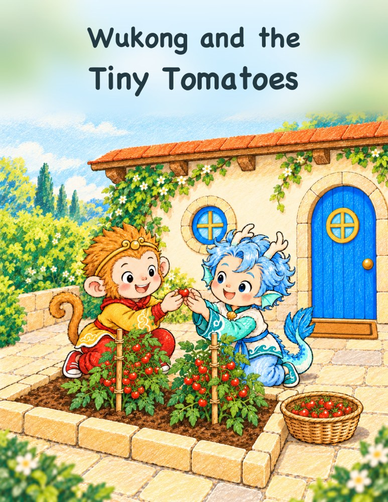
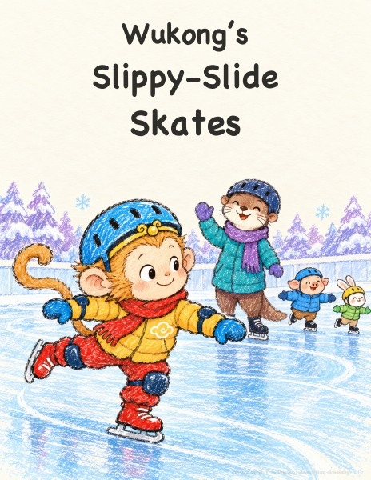
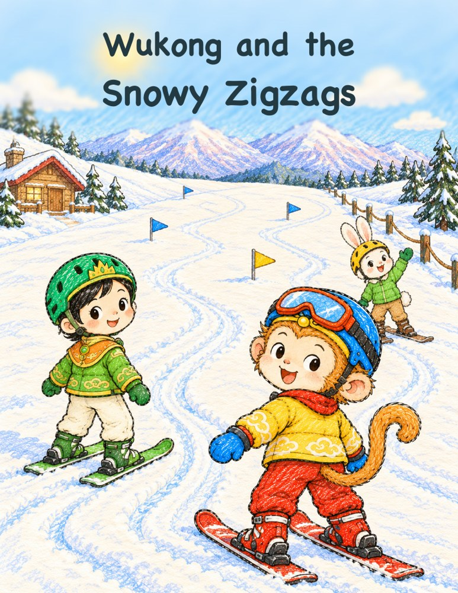
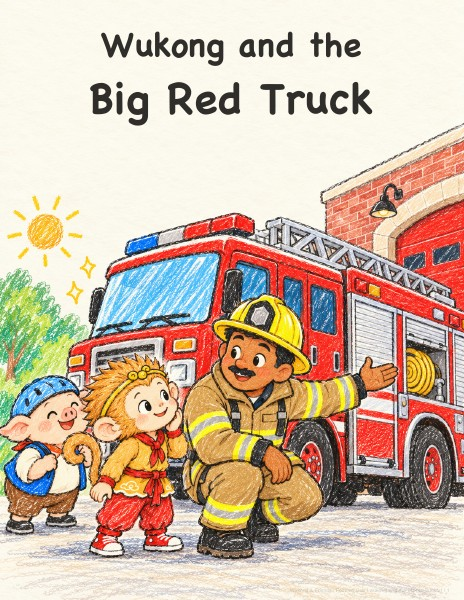
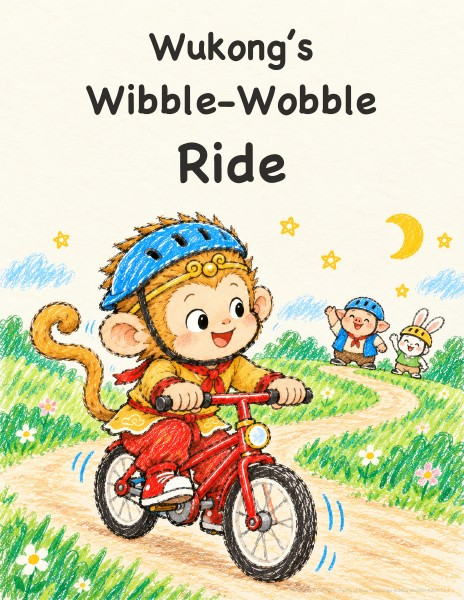

16 pages · Children’s crayon doodles
Wukong and the Snowy Zigzags
Wukong and Princess Iron Fan learn to ski, one snowy zigzag at a time. Jade Rabbit cheers them on, and warm cocoa and fish crackers make a happy finish.
Read the story ↗ Wukong & Friends
Wukong & FriendsJoin Wukong, Pigsy and friends as today turns gently into a dream.
English picture books for little readers. Be curious, keep trying, and learn to be kind to a friend.
Pick a bedtime story ↓


Free to download and lovely to fold into little books. 7 stories
16 pages · Children’s crayon doodles
Wukong and Princess Iron Fan learn to ski, one snowy zigzag at a time. Jade Rabbit cheers them on, and warm cocoa and fish crackers make a happy finish.
Read the story ↗16 pages · Children’s crayon doodles
Wukong and Ao Bing plant tiny tomatoes, water them, and wait. A little rain magic helps; patience brings a sweet harvest to share.
Read the story ↗16 pages · Children’s crayon doodles
His feet feel like tiny sleds. A little tumble, then one more try!
Read the story ↗
16 pages · Children’s crayon doodles
Join Firefighter Ben to discover a very exciting big red truck.
Read the story ↗
16 pages · Children’s crayon doodles
Bicycles look so cool. Riding one turns out to be rather wibbly-wobbly!
Read the story ↗
10 pages · Children’s crayon doodles
One tiny taste leads Wukong toward a warm, friendly supper.
Read the story ↗
10 pages · Children’s crayon doodles
Wukong wants a nap, but his friends’ helpful ideas are a little noisy.
Read the story ↗No story found. Try another word.
Short English sentences to read slowly together, for family storytime and children beginning to recognize words.
Pigsy is one of Wukong’s best friends. They care for each other and leave room for everyone to learn at their own pace.
Stories end in different ways—sometimes with a goodnight, sometimes with a small celebration or a new thought to carry into dreams.
If these books have brought a little joy to bedtime, you can help the next one grow. Every story is free to download, with no payment or account required.